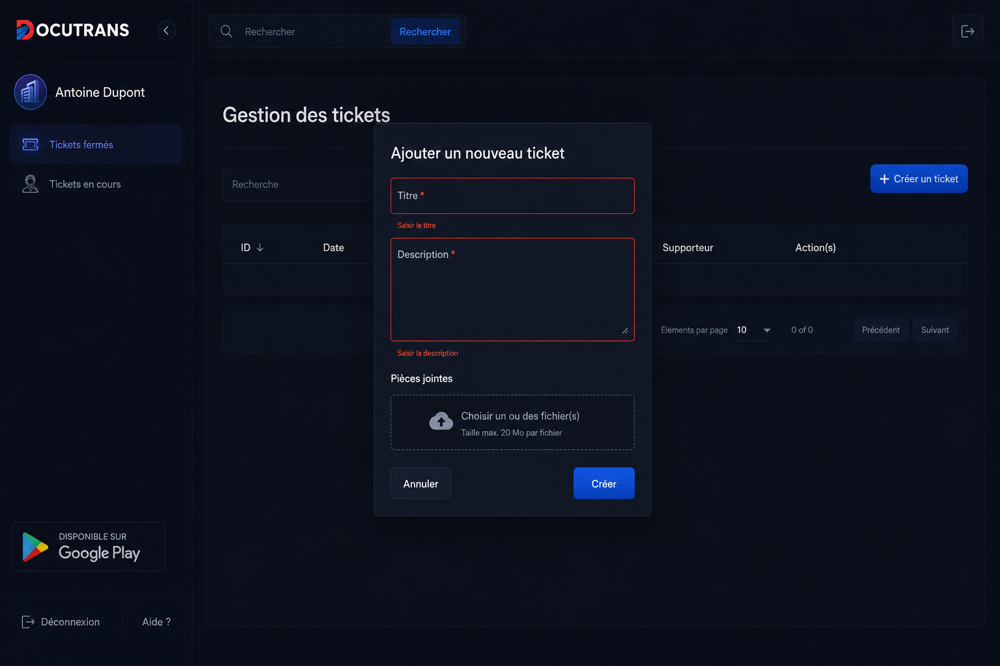

01
BeOnline
May 2024 - Present
Spring Boot and Angular 16 platforms, secured REST APIs,
Stripe, PayPal, Konnect, TDD, Jenkins, Docker, Kafka, AWS
CloudWatch, Nginx.

- Built web and e-commerce platforms using Spring Boot and Angular 16.
- Built and secured REST APIs with Spring Security and JWT, serving multiple frontend clients.
- Integrated payment gateways including Stripe, PayPal, and Konnect into production platforms.
- Applied TDD with JUnit 5, writing unit and integration tests before implementation.
- Automated build, test, and deployment pipelines using Jenkins and Docker.
- Designed event-driven architecture using Apache Kafka between microservices.
- Managed containerized environments with Docker Compose across development, staging, and production.
- Monitored application health and logs using AWS CloudWatch and configured Nginx reverse proxies.
- Stack: Java, Spring Boot, Angular 16, Docker, Jenkins, Kafka, MySQL, SQL Server.